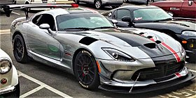

Dodge Viper
From Wikipedia, the free encyclopedia
Dodge Viper
Dodge Viper ACR
Overview
Manufacturer: Dodge[a]
Production: 1991–2010, 2013–2017
Assembly: United States: Detroit, Michigan (New Mack Assembly; 1991–1995); (Conner Avenue Assembly; 1996–2017)
The Dodge Viper is a sports car that was manufactured by Dodge (by SRT for 2013 and 2014), a division of American car manufacturer FCA US LLC from 1992 until 2017, having taken a brief hiatus in 2007, and from 2010 to 2012. Production of the two-seat sports car began at New Mack Assembly Plant in 1991 and moved to Conner Avenue Assembly Plant in October 1995.
Although Chrysler considered ending production because of serious financial problems,[1][2] on September 14, 2010, then-chief executive Sergio Marchionne announced and previewed a new model of the Viper for 2012. [3] In 2014, the Viper was named number 10 on the "Most American Cars" list, meaning 75% or more of its parts are manufactured in the U.S.[4] The Viper was eventually discontinued in 2017 after approximately 32,000 were produced over the 26 years of production.[5][6]
The 0-60 mph (97 km/h) time on a Viper varies from around 3.5 to 4.5 seconds. Top speed ranges from 160 mph (260 km/h) to over 200 mph (320 km/h), depending on variant and year.[7]
Development History
The Viper was initially conceived in late 1988 at Chrysler's Advanced Design Studios. The following February, Chrysler president Bob Lutz suggested to Tom Gale at Chrysler Design Center that the company should consider producing a modern Cobra, and a clay model was presented to Lutz a few months later. Produced in sheet metal by Metalcrafters,[8] the car appeared as a concept at the North American International Auto Show in 1989. Public reaction was so enthusiastic that chief engineer Roy Sjoberg was directed to develop it as a standard production vehicle. But then Chrysler chairman Lee Iacocca delayed approving the $70 million needed to put the sports car into production, saying it was a lot to spend without assurance of financial return.[9]
Sjoberg selected 85 engineers to be "Team Viper", with development beginning in March 1989. The team asked the then-Chrysler subsidiary Lamborghini to cast a prototype aluminum block for the sports car to use in May. The production body was completed in Fall 1989, with a chassis prototype running in December. Though a V8 engine was first used in the test mule called White Mule, the V10 engine, which the production car was meant to use, was ready in February 1990. Official approval from Iacocca came in May 1990. By auto industry standards $70 million was not a lot of money but the potential in improved image was fantastic. One year later, Carroll Shelby piloted a pre-production car as the pace vehicle in the Indianapolis 500 race.[10] In November 1991, the car was released to reviewers with the first retail shipments beginning in January 1992.
The powerful two-seater, which sold for $52,000, sparked immediate interest in the Dodge brand among enthusiasts and the automotive press.[11] Lutz hoped it would raise the spirits of the designers and engineers who were discouraged by the homely, unpopular cars that they had been commanded to produce.[11] The popularity of the Viper overshadowed the recent failure of Iacocca's pet car, the TC, which had cost five times as much to develop.[11]
Models
First generation (SR I; 1991–1995)
Main article: Dodge Viper (SR I)
Dodge Viper (SR I).
The first prototype was tested in January 1989. It debuted in 1991 with two pre-production models as the pace car for the Indianapolis 500 when Dodge was forced to substitute it in place of the Japanese-built Dodge Stealth, because of complaints from the United Auto Workers, and went on sale in January 1992 as the RT/10 Roadster.[12]
Lamborghini (then owned by Chrysler Corporation) helped with the design of the V10 engine for the Viper, which was based on the Chrysler's LA V8 engine. A major contributor to the Viper since the beginning was Dick Winkles, the chief power engineer, who had spent time in Italy overseeing the development of the engine.[13]
Originally engineered to be a performance car, the Viper had no exterior-mounted door handles or key cylinders and no air conditioning (however, this was added as an option for the 1994-95 models, and climate controls featured a "snowflake" icon, which indicated a potential setting for the A/C). The roof was made from canvas, and the windows were made from vinyl using zippers to open and close, much like the Jeep Wrangler. However, the Viper was still equipped with some domestic features, including manually-adjustable leather-trimmed sport bucket seats with lumbar support, an AM/FM stereo cassette player with clock and high fidelity sound system, and interior carpeting. Aluminium alloy wheels were larger in diameter due to the larger brakes. A lightweight fiberglass hard roof option on later models was also available to cover the canvas soft roof, and was shipped with each new car. There were also no airbags, in the interest of weight reduction. Adjustable performance suspension was also an available option for most Vipers.
The engine weighs 323 kg (712 lb) and is rated at 400 hp (406 PS; 298 kW) at 4,600 rpm and 630 N⋅m (465 lb⋅ft) of torque at 3,600 rpm. Due to the long-gearing allowed by the engine, it provides fuel economy at a United States Environmental Protection Agency-rated 12 mpg‑US (20 L/100 km; 14 mpg‑imp) in the city and 20 mpg‑US (12 L/100 km; 24 mpg‑imp) on the highway.[14] The body is a tubular steel frame with resin transfer molding (RTM) fiberglass panels. The car has a curb weight of 1,490 kg (3,280 lb) and lacks modern driver aids such as traction control and anti-lock brakes. The SR I can accelerate from 0–100 km/h (0–62 mph) in 4.2 seconds, 0–161 km/h (0–100 mph) in 9.2 seconds, can complete the quarter mile in 12.6 seconds at the speed of 183.1 km/h (113.8 mph) and has a maximum speed of approximately 266 km/h (165 mph). [15][16] Its large tires allow the car to average close to one lateral g in corners. However, the car proves tricky to drive at high speeds, particularly for the unskilled driver.
Second generation (SR II, 1996–2002)
Main article: Dodge Viper (SR II)
Dodge Viper GTS, which was introduced as a new model for the second-generation Viper
The second-generation Viper, codenamed "SR II" was introduced in 1996. The exposed side exhaust pipes on the RT/10 roadster were relocated to a single muffler at the rear exiting via two large central tailpipes during the middle of the model year, which reduced back pressure, and therefore increased the power to 415 hp (309 kW; 421 PS). Torque would also increase by 23 lb⋅ft (31 N⋅m) to 488 lb⋅ft (662 N⋅m). A removable hardtop was now available along with a sliding glass window. Some steel suspension components were replaced by aluminum, resulting in a 60 lb (27 kg) weight reduction.[17]
Third generation (ZB I, 2003–2006)
Main article: Dodge Viper (ZB I)
The third-generation Viper received heavy design updates by Osamu Shikado.
The Dodge Viper underwent a major redesign in 2002, courtesy of DaimlerChrysler's Street and Racing Technology group, taking cues from the Dodge Viper GTS-R concept presented in 2000. The new Viper SRT-10, which replaced both the GTS and the RT/10, was heavily restyled with sharp, angled bodywork. The engine's displacement was increased to 8.3 L; 505.6 cu in (8,285 cc), which, with other upgrades, increased the maximum power output to 500 hp (507 PS; 373 kW) at 5,600 rpm and 525 lb⋅ft (712 N⋅m) of torque at 4,200 rpm.[21] Despite the power increase, the engine weight was reduced to about 500 lb (230 kg). The chassis was also improved, becoming more rigid and weighing approximately 80 lb (36 kg) less than the previous model.
Fourth generation (ZB II, 2008–2010)
Main article: Dodge Viper (ZB II)
In 2008, with the introduction of the 8,382 cc (8.4 L; 511.5 cu in) V10 engine, the power output was raised from 500 hp (507 PS; 373 kW) to 600 hp (608 PS; 447 kW) at 6,100 rpm and 560 lb⋅ft (759 N⋅m) of torque at 5,000 rpm. The engine also received better flowing heads with larger valves, MECADYNE cam-in-cam variable valve timing on the exhaust cam lobes, and dual electronic throttle bodies. [25][26] The rev limit could be increased by 300 rpm due to the improved valvetrain stability from both the new camshaft profiles and valve springs. The engine was developed with some external assistance from McLaren Automotive and Ricardo Consulting Engineers. Electronic engine control was developed by Continental AG; the controller can monitor the crankshaft and cylinder position up to six times during each firing and has 10 times more processing power than the previous unit.
Fifth generation (VX, 2013–2017)
Main article: Dodge Viper (VX I)
At a dealer conference on September 14, 2010 in Orlando, Florida, the then Chrysler Group and Fiat CEO Sergio Marchionne was reported[31][32] to have concluded his remarks by unveiling a rolling 2012 Dodge Viper prototype.
Motorsport
Phase SR II
Main article: Chrysler Viper GTS-R
In 1996, a race car based on the Viper was built, and was called the Chrysler Viper GTS-R (in American races, was named the Dodge Viper GTS-R). The construction was done by Chrysler and by the teams Reynard Motorsport and Oreca. The numbers the car used were vast, with numbers like #91, #51, #2, #92, and #52.
Phase ZB I
A new race car called the Viper Competition Coupe took the GTS-R's place for the second phase. The Viper Competition Coupe had the same 8.3-liter V10 engine as the road legal Viper, but increased power to 520 hp (388 kW; 527 PS), and 540 lb⋅ft (732 N⋅m) of torque.[81] The Competition Coupe had a carbon fiber composite body on a tubular steel frame with no interior trim and an FIA-legal roll cage. The exterior design of the Competition Coupe was based on the Viper GTS-R concept from 2000. Modifications to the mechanicals of the Viper included a 27-gallon fuel cell, differential cooler, ducted brakes, improved driver and engine cooling, trap door oil pan, low-inertia flywheel, an improved double-wishbone suspension system, new spherical bearing control arm attachments, two-way adjustable coil over dampers, and a driver-adjustable blade-type rear anti-roll bar. The anti-lock braking system added a distribution control system.[82] The initial price of the car is around $100,000.[82]
Phase VX I
SRT Viper GTS-R
The GTS-R returned in competition, but this time as an LM GTE class race car and instead, was constructed and designed by SRT Motorsports and Riley Technologies. It includes Michelin GT tires. The car retained the number #91 but had a new number for it called #93.
SRT Viper GT3-R
The Viper GT3-R was made available for race teams in the later half of 2013 at an estimated cost of $459,000.[87] The car shares many technologies with the GTE race car but it is built to Group GT3 regulations.